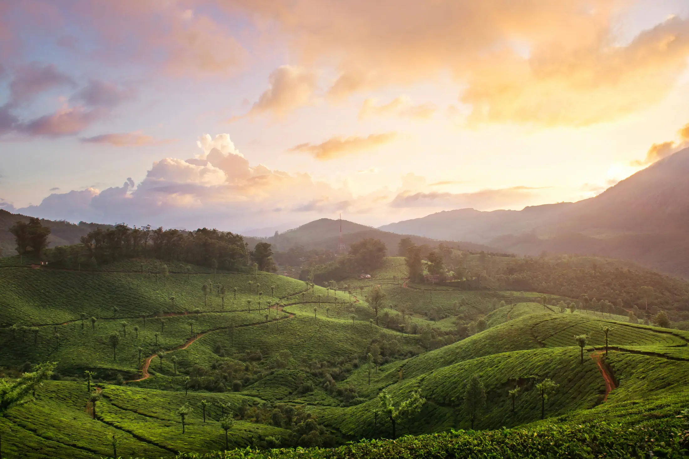
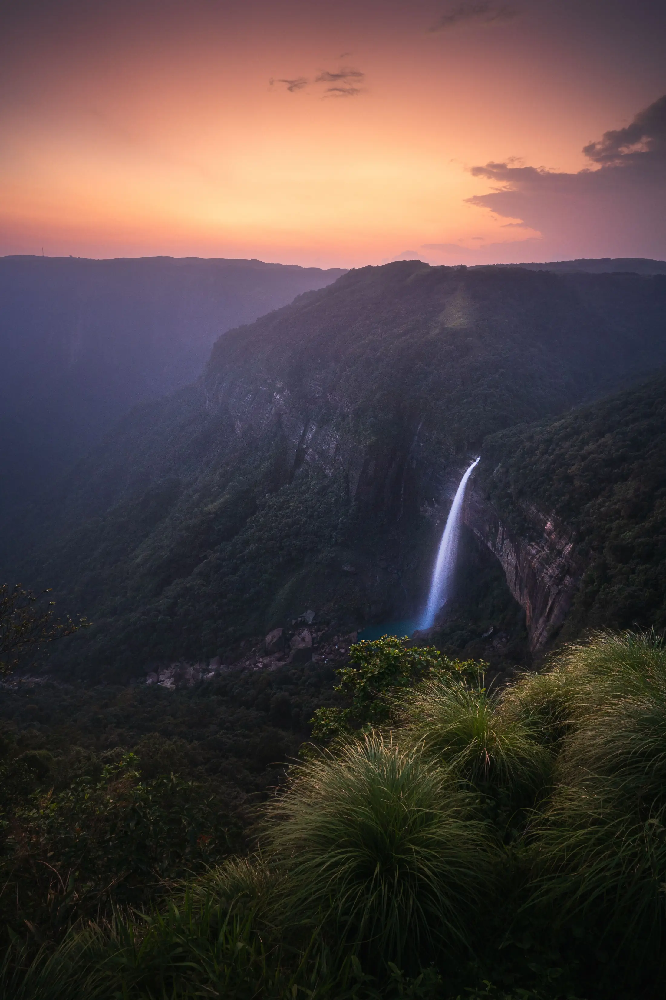

- Eleven treks in our atlas list July or August as a best month: Western Ghats ridges and Himalayan meadows, plus a few Kashmir and Ladakh routes.
- Plan for rain, mud and leeches: waterproof shoes, a poncho, a pack liner, gaiters and a spare day for road delays.
- Closures and rules change season by season. In 2025, Maharashtra barred Kalsubai and Sandhan Valley until 10 August, so check before you book.
The best monsoon treks in India are the ones that suit rain: green Western Ghats ridges like Harishchandragad and Rajmachi, and Himalayan meadows such as the Valley of Flowers. Many popular Himalayan treks are poor choices in July and August, so pick from the list below rather than your usual favourite.
Which treks list July or August as best?
Our monsoon treks page lists the 11 treks whose sources call July or August a best month. Nine of them, from each region, are below.
| Trek | Days | Highest point | Difficulty | Region |
|---|---|---|---|---|
| Rajmachi | 2 | 826 m | Easy | Western Ghats |
| Harishchandragad | 2 | 1,422 m | Easy | Western Ghats |
| Kudremukh | 3 | 1,892 m | Moderate | Western Ghats |
| Valley of Flowers | 4 | 4,329 m | Not graded | Uttarakhand |
| Hampta Pass | 5 | 4,200 m | Moderate | Himachal |
| Kolahoi Glacier | 5 | 3,850 m | Easy to moderate | Kashmir |
| Tarsar Marsar | 7 | 4,024 m | Moderate | Kashmir |
| Kashmir Great Lakes | 8 | 4,206 m | Hard | Kashmir |
| Markha Valley | 5 | 5,260 m | Moderate to hard | Ladakh |
When does the monsoon actually arrive? Press reports of the India Meteorological Department's normal dates put onset over Kerala at 1 June and cover of the whole country by 8 July. So the rains are already under way in much of the country by early July.

What is it like on a monsoon trail?
Expect mud, streams in spate and cloud that hides the view. Bikat Adventures lists Harishchandragad monsoon days at 20 to 30 C with heavy rain. For the Valley of Flowers, Himalayan Dream Treks says July and August trails can be muddy and slippery, afternoon rain is common, and heavy rain can cause landslides that block roads for hours. It suggests water-resistant shoes, a poncho, trekking poles and an extra buffer day in your itinerary. Bikat says to expect rain on the Kullu side of Hampta Pass, with days of 10 to 15 C and nights of 0 to 5 C.
What should you wear and carry?
Trekkaro's Valley of Flowers list calls rain gear essential and is a good model for any monsoon trek:
- A rain jacket and rain pants, or a good poncho.
- A rain cover for your backpack, plus a plastic bag lining inside, and zip bags for your phone, papers and spare clothes.
- Waterproof shoes with ankle support, broken in before the trek. Trekkaro says wet feet are the main cause of blisters.
- Gaiters to keep mud and small stones out of your shoes.
- Quick-dry trek pants rather than jeans, and no cotton next to your skin.
Our packing list and shoes and poles guide go into more detail.

How do you handle leeches?
Leeches are common in wet forest. The Kudremukh page cites Trekup India saying the forest is full of them, most of all in the monsoon, and that trekkers put Dettol or Savlon on legs and shoes before starting. Ask your operator what they advise for your trek.
If one attaches, Healthline's advice is to find the narrow mouth end, slide a fingernail or a thin card under it to break the suction, and flick the leech away. It says to avoid salt, fire, shampoo, bug repellent and pulling, which can make the leech vomit into the wound. Bites bleed for a while because leech saliva stops clotting; clean the bite and cover it. See a doctor for signs of infection, a severe allergic reaction, or a leech you cannot remove.
What about rain, landslides and closures?
The US government's ready.gov lists landslide warning signs that apply on any hill road or trail: rushing water or mud, unusual noises such as cracking trees or knocking boulders, leaning trees, new ground cracks, and a stream that suddenly changes or turns from clear to muddy. It advises not crossing flooded or muddy roads, staying out of low-lying valleys during threats, and climbing uphill fast if caught in a path. In practice: do not cross swollen streams, stay with your leader, and accept a delay.
Closures are real. A report dated 25 June 2025 says the Maharashtra Forest Department barred entry to Kalsubai, Ratangad, Alang, Madan and Kulang forts and Sandhan Valley until 10 August, citing slippery trails and crowding, and capped daily entry at 500 at some Bhandardara spots. The report does not name Harishchandragad, but our trek page notes it lies inside the Kalsubai Harishchandragad Wildlife Sanctuary, where the forest office sometimes sets a fee and timings. Orders change every year, so ask the local forest office or your operator.
The Valley of Flowers is open between set dates. Outlook Traveller reports 1 June to 31 October 2026, entry from 7 a.m. to 2 p.m., everyone out of the park by 5 p.m., and no camping, drones or single-use plastic. It lists the Indian fee at ₹150 and the foreign fee at ₹600 for a three-day permit, though some guides quote ₹200 for Indians, so confirm at the forest counter.
Which popular treks to skip in July and August?
Not every Himalayan trek suits the rains. Himalayan Dream Treks says July and August are not recommended for Triund because of rain and landslide risk, and Wikivoyage describes June to September as a poor time for Sandakphu for the same reason. Brahmatal's page on this site advises avoiding July to September. If you are not sure, see the winter list or treks by month, and for a first Himalayan trek read Uttarakhand vs Himachal.
General planning information. Conditions and rules change; confirm with your operator and the forest department. Treqz does not run treks.
Sources
- Himalayan Dream Treks: Valley of Flowers
- Trekkaro: Valley of Flowers things to carry
- Outlook Traveller: Valley of Flowers opens for 2026
- Healthline: How to remove a leech
- Ready.gov: Landslides and debris flow
- Pune Pulse: Entry banned at popular Maharashtra trekking spots (25 June 2025)
- The Week (PTI): IMD monsoon normal dates
- Bikat Adventures: Harishchandragad
- Bikat Adventures: Hampta Pass
- Trekup India: Kudremukh
- Himalayan Dream Treks: Triund
- Wikivoyage: Sandakphu
Quick questions
Which trek is best in the monsoon?
Valley of Flowers is the best-known monsoon trek, and its operators name mid-July to mid-August as the best window. For a short trip near Mumbai or Pune, Harishchandragad and Rajmachi list July and August among their best months.
How do I remove a leech?
Healthline advises sliding a fingernail or a thin card under the narrow mouth end to break the suction, then flicking the leech away. It warns against salt, fire, repellent or pulling, which can raise infection risk.
Are monsoon treks safe?
They can be, with the right trek and a flexible plan. Rain makes trails slippery and can block roads, so use a guided batch, start early, check forecasts and skip a day when conditions are bad.
Is Triund or Sandakphu good in July and August?
No. Himalayan Dream Treks does not recommend Triund in July and August because of rain and landslide risk, and Wikivoyage rates June to September a poor time for Sandakphu.